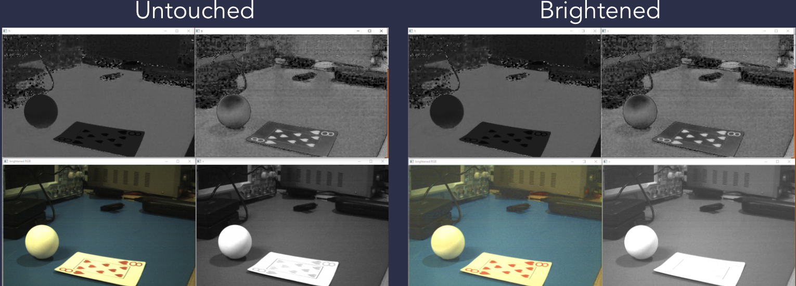
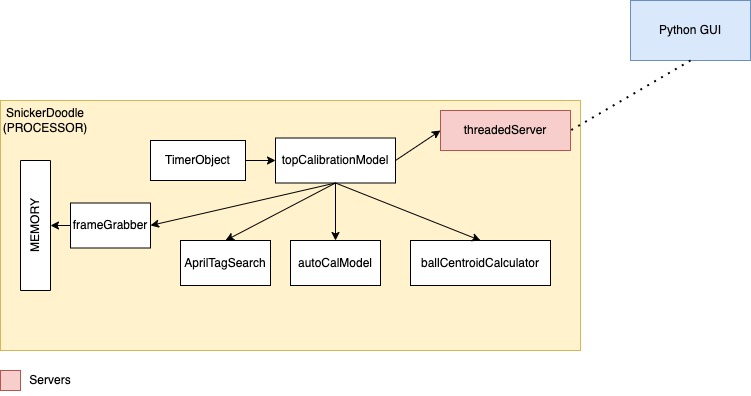
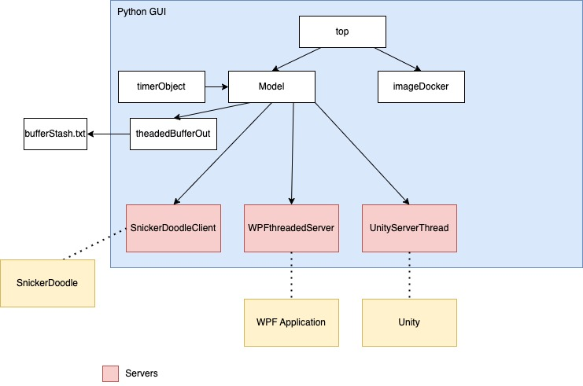
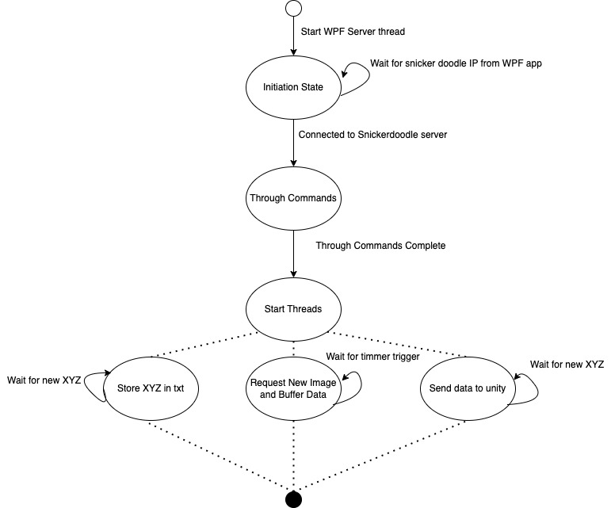
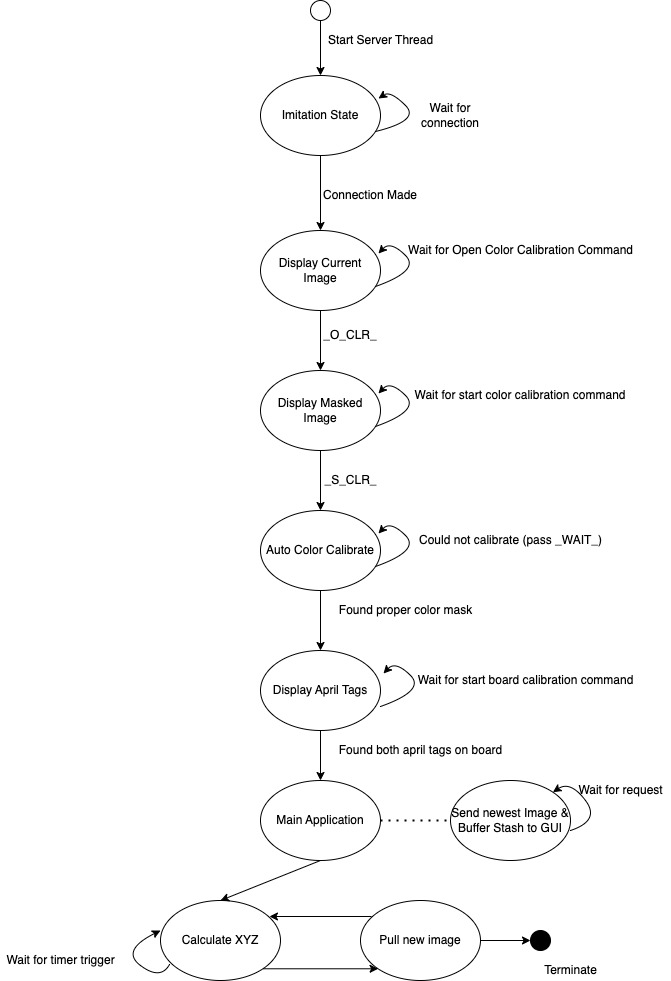

Tennis Ball Tracking System
Embedded Systems Design II:
CPET-563
In collaboration with Hasnain Akhtar, Michael Gottwald, Vivian Lin, Olivia Luttazi, and XiXiao Yue
Embedded Systems Design II:
CPET-563
In collaboration with Hasnain Akhtar, Michael Gottwald, Vivian Lin, Olivia Luttazi, and XiXiao Yue
This was a group project, if you would like to check out the full critical design review presentation, please feel free to download it here by clicking the button below. The following page talks about the backend of the project specifically, being the focus of my work on the project.
Due to the constraints of the project, and not being able to receive hardware
during the PDR, a simple PYQT GUI was made using the Model, View, ViewModel (MVVM)
design. The resulting GUI allowed for the testing and comparison of various color
spaces in the beginning, but expanded to be much more. Designing the GUI with the
MVVM principles ultimately led to an extensive testing application that was very
easy to add and subtracts components to. When the time came to get the hardware,
most of the project had been completed, a few minor adjustments to the structure
of our current GUI had to be made. Though overall, it allowed the back end
development of the project to be fast tracked when compared to other teams.
Below you can see the full GUI design completed during the PDR. It had started
with four classes, and slowly expanded into what is seen now. The application had
options for manual or automatic calibration of several color spaces. In manual,
you would adjust the max and minimum colors to mask. In Auto, you highlight the
object you are trying to mask, and it calculates the current color spaces max and
mins for the user. This could be done for a series of pictures, or even through a
serial USB camera, plugged into the computer.
Determination of a color space for masking came down to one with a light independent
variable. The common RGB color space can be nice, but the same picture with more
light can skew results. As such, a color space where the values of color being
masked are strictly independent of light are needed. This leaves the HSV, and Y Cr
Cb color space. Both of these color spaces have two channels that dictate the color
of the pixel being seen in the image, and one value determines the amount of light
the color is seeing on the pixel in the image. As such, a filter on the two color
channels will result in pretty similar results even if the lighting in the room is
changing. Below is an example of the HSV color space being manipulated to
demonstrate. The Hue (H) and Saturation (S) channels are in the top left corner and
top right corner respectively of both images. They remain unchanged the entire
time. The bottom right corner of both images is the Value (V) channel, or the light
dependent channel. This channel when increased or decreased will make the picture
seem like there's more light, or less light in the room. The image on the bottom
left corner is the resulting image when all three channels are combined back
together.


Once the hardware was given to us the current GUI was broken down quickly and
easily. Almost all the classes that were under the model were transferred to the
snickerdoodle processor. The snickerdoodle was then connected via a threaded
server to the main application running on a separate PC. The socket server
connection response determined the state the snickerdoodle would be processing
at the current frame. The processor is responsible for grabbing the most recent
image from memory, doing any additional masking, and passing to the GUI.
In addition to making any additional needed masking, the processor is also
responsible for calculating the real world position of the ball. This is
done every frame per second and is threaded to do so. Once a new position
is calculated, it is stashed away into a buffer that is stored in preparation
for the server. When the server requests a new image, the most recent image,
as well as the buffer stash of ball positions are sent off.

The new and improved GUI now contained a few server threads under the model,
and for view, just an image docker. The idea with this is the GUI would have
an image docker that would display the current image being sent back over the
snickerdoodle server. It then would send the buffered data over a unity server
thread that connects to a unity client running a close to real-time visualization
of the game.
This all then wraps nicely into a WPF application that uses the python image
docking screen as a part of its application. Interactions with the WPF application
sends specialized commands over a WPF Server running on the python GUI, controlling
actions on the snickerdoodle.

Testing for the application was done debug on discovery basis. If something was found, a
fix was sought out, this typically led to other hidden bugs. If a new feature was added to
the application, it was tested quickly to verify functionality, but not extensively.
However, the design was modified in increments, and version control with documentation
allowed for efficient modifications, and limited errors. The application eventually reached
a maximum size, being the time of the PDR, and being needed for testing theories. As such it
came time to break it down. Doing it so in the same manner that it was formulated. Eventually
adding threaded servers, in chunks, allowing testing throughout development.
The final round of testing on the backend was to run through a series of functionality tests.
Making sure sudo test commands from the WPF can properly run the snickerdoodle. The addition
of false, invalid, or commands in the wrong order were tested as well to verify the system
would not crash. Once everything proved to be functioning and ready for the next step, the
PYQT GUI was turned into an executable and placed inside of the WPF application for further
integration.
The final system was capable of successfully finding and tracking a ball across the court.
It was then able to accurately interpret the game in real-time, create a 3D visualization of
the game, and alert users if the ball bounces out of bounds. They are meeting all major
requirements.
Issues did arise though with connection between the unity server and the actual unity visualization.
For demonstration, a buffer of moves were collected and stored. After a little bit, those points
were sent over the server to unity to test out the accuracy of the visualization. Upon integration
with the unity server, it went untested, as the code was passed from another group member that used
it for a simplified connection. It had indeed worked, but somewhere along the lines of turning it
threaded, or maybe when the updated amount of data for the more complex system was set up, a bug
was formed. Either way, it wasn’t completed in time for the CDR, and a few more hours would be
needed to correct it.
Another issue that the application had was low frames per second and response times due to
network latency and rendering. The ball was being tracked in real-time, at twenty frames per
second, however, a user would not see this rate. Instead they would see something around three
to five frames per second. No loss in ball positioning to the GUI was ever seen though. Using
a statically typed language, as well as reducing server connections, and processing done on the
snickerdoodle all could help reduce this issue. It is capable of streaming real-time from the
camera over the network, a more efficient approach will just have to be taken.
The hue, saturation, value (HSV) color space was by far the most optimal during indoor testing.
It could easily pull out a bright fluorescent color. It was found though that in high light
environments, this theory did not hold up. Every now and then it would lose track of the
centroid on the ball. Changes to the mask, or an additional algorithm to remove improbable
location results could be added to adjust for this ambiguity if further time was had.
Though easy and intuitive, python is not quite ideal for embedded development. It was convenient
for a fast and easy tool to test ideas and theories. At the same time though, the nature of the
language caused many issues. Python is strongly typed, and as such, variable types can not be
intermixed. This isn’t too big of an issue until using libraries, and not knowing data types being
passed, and a whole world of problems. No hate on strongly typed languages, just hate on python for
weakly defining variables.
A decent amount of work was put into the application for testing, and as a result, when it came
time to get the hardware, instead of creating a new method for efficiency, a method to save time
was constructed instead. The overall nature of this back end is somewhat complex, but it came
together quickly and smoothly from this test application. If more time was needed in the testing
phase, this may have indeed paid off. In the long run though, a bit more time should have ultimately
been swapped over to doing the embedded portion of the project in C, and just directly passing
information to the WPF application, with absolutely zero python involved.
State Machine for code running on the python executable:
State Machine for code running on the snickerdoodle:
